This vignette summarises the various formats that grid drawing functions take. Most of this information is available scattered throughout the R documentation. This appendix brings it all together in one place.
Almost every geom has either colour, fill, or both. Colours and fills can be specified in the following ways:
A name, e.g., "red". R has 657 built-in named colours, which can be listed with colours().
An rgb specification, with a string of the form "#RRGGBB" where each of the pairs RR, GG, BB consists of two hexadecimal digits giving a value in the range 00 to FF
You can optionally make the colour transparent by using the form "#RRGGBBAA".
An NA, for a completely transparent colour.
The munsell package, by Charlotte Wickham, makes it easy to choose specific colours using a system designed by Albert H. Munsell. If you invest a little in learning the system, it provides a convenient way of specifying aesthetically pleasing colours.
munsell::mnsl("5PB 5/10")
#> [1] "#447DBF"As well as colour, the appearance of a line is affected by size, linetype, linejoin and lineend.
Line types can be specified with:
An integer or name: 0 = blank, 1 = solid, 2 = dashed, 3 = dotted, 4 = dotdash, 5 = longdash, 6 = twodash, as shown below:
lty <- c("solid", "dashed", "dotted", "dotdash", "longdash", "twodash")
linetypes <- data.frame(
y = seq_along(lty),
lty = lty
)
ggplot(linetypes, aes(0, y)) +
geom_segment(aes(xend = 5, yend = y, linetype = lty)) +
scale_linetype_identity() +
geom_text(aes(label = lty), hjust = 0, nudge_y = 0.2) +
scale_x_continuous(NULL, breaks = NULL) +
scale_y_reverse(NULL, breaks = NULL)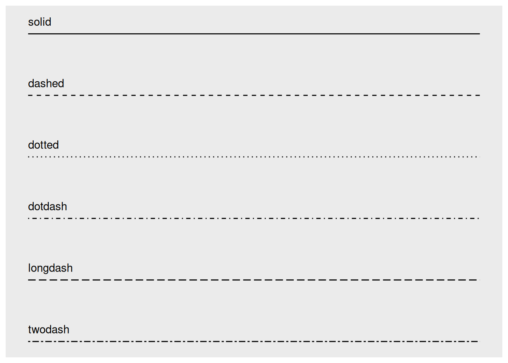
The lengths of on/off stretches of line. This is done with a string containing 2, 4, 6, or 8 hexadecimal digits which give the lengths of consecutive lengths. For example, the string "33" specifies three units on followed by three off and "3313" specifies three units on followed by three off followed by one on and finally three off.
lty <- c("11", "18", "1f", "81", "88", "8f", "f1", "f8", "ff")
linetypes <- data.frame(
y = seq_along(lty),
lty = lty
)
ggplot(linetypes, aes(0, y)) +
geom_segment(aes(xend = 5, yend = y, linetype = lty)) +
scale_linetype_identity() +
geom_text(aes(label = lty), hjust = 0, nudge_y = 0.2) +
scale_x_continuous(NULL, breaks = NULL) +
scale_y_reverse(NULL, breaks = NULL)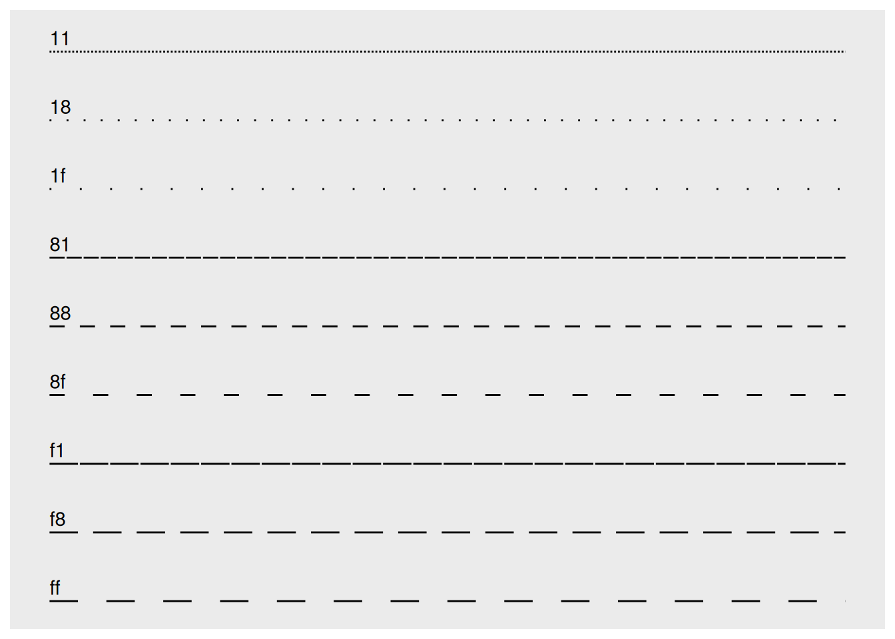
The five standard dash-dot line types described above correspond to 44, 13, 1343, 73, and 2262.
The appearance of the line end is controlled by the lineend paramter, and can be one of “round”, “butt” (the default), or “square”.
df <- data.frame(x = 1:3, y = c(4, 1, 9))
base <- ggplot(df, aes(x, y)) + xlim(0.5, 3.5) + ylim(0, 10)
base +
geom_path(size = 10) +
geom_path(size = 1, colour = "red")
base +
geom_path(size = 10, lineend = "round") +
geom_path(size = 1, colour = "red")
base +
geom_path(size = 10, lineend = "square") +
geom_path(size = 1, colour = "red")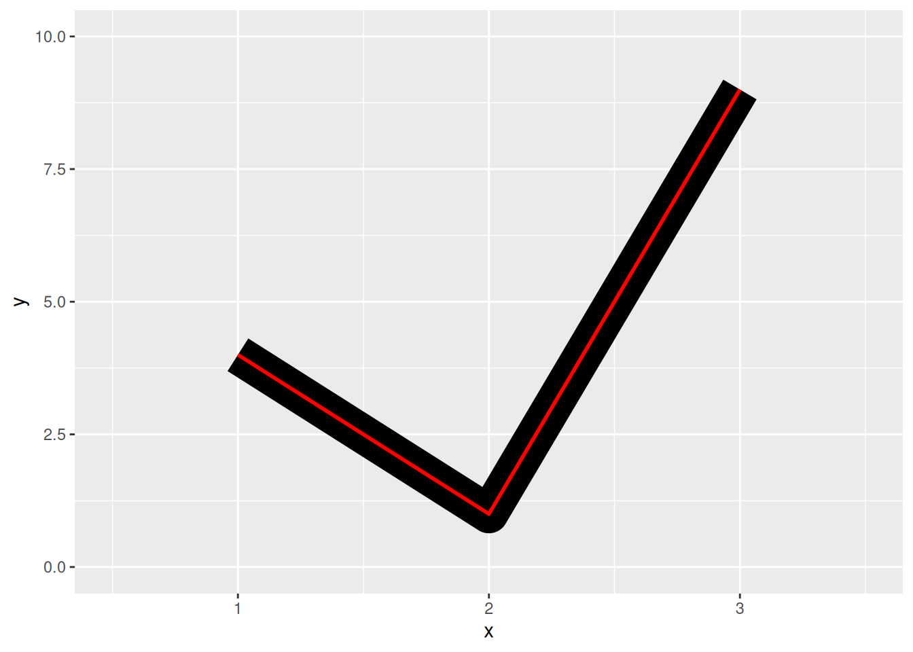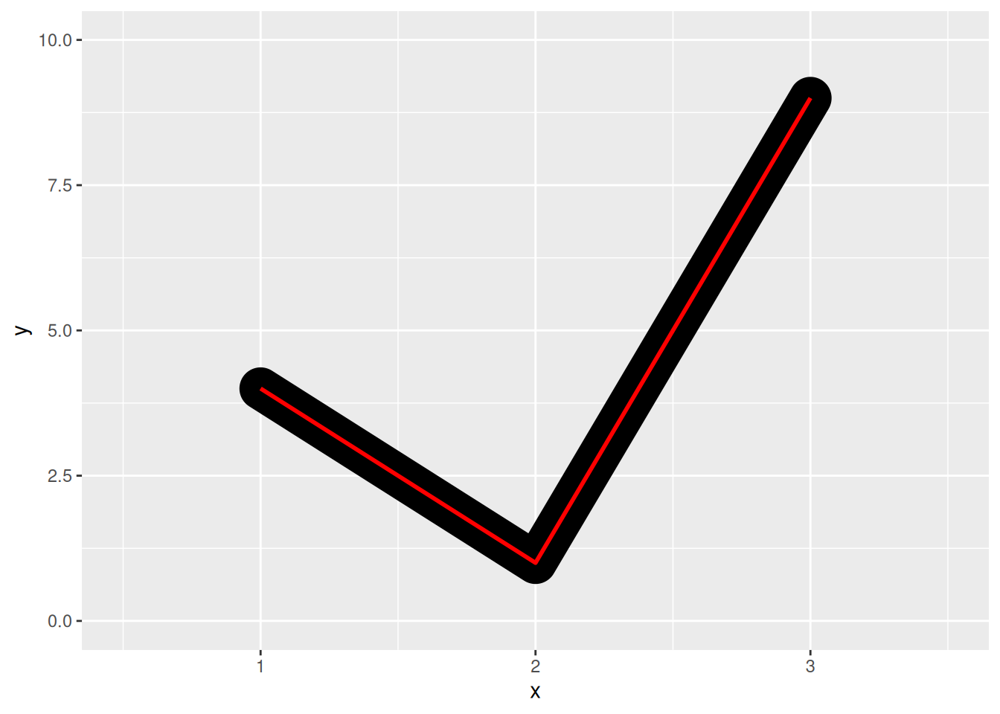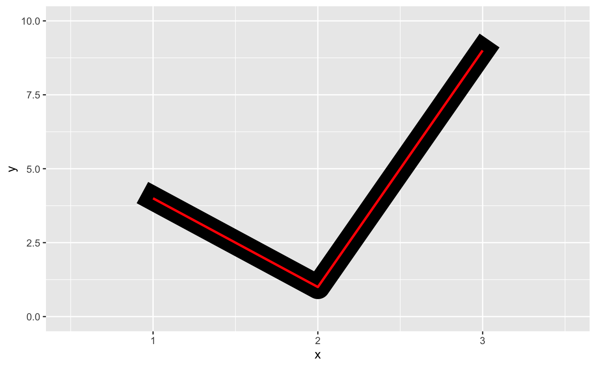
The appearance of line joins is controlled by linejoin and can be one of “round” (the default), “mitre”, or “bevel”.
df <- data.frame(x = 1:3, y = c(9, 1, 9))
base <- ggplot(df, aes(x, y)) + ylim(0, 10)
base +
geom_path(size = 10) +
geom_path(size = 1, colour = "red")
base +
geom_path(size = 10, linejoin = "mitre") +
geom_path(size = 1, colour = "red")
base +
geom_path(size = 10, linejoin = "bevel") +
geom_path(size = 1, colour = "red")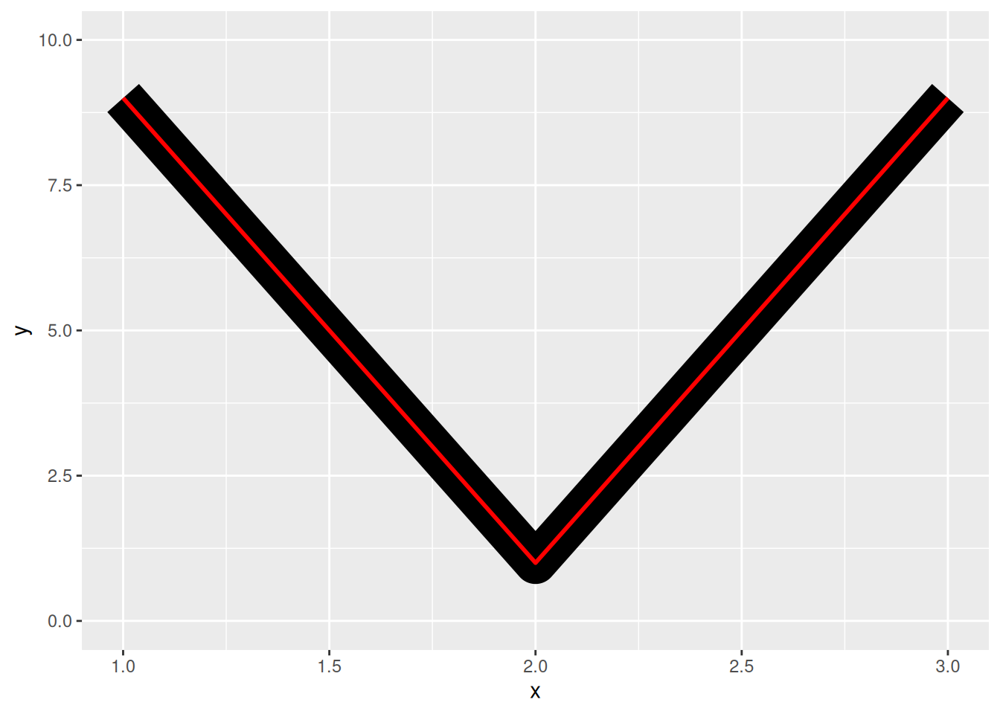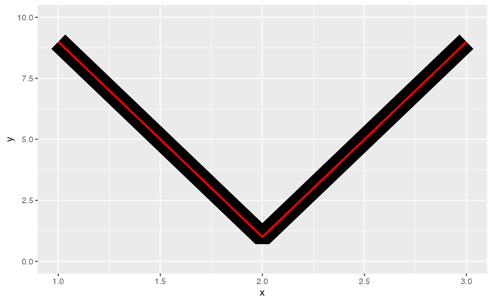
Mitre joins are automatically converted to bevel joins whenever the angle is too small (which would create a very long bevel). This is controlled by the linemitre parameter which specifies the maximum ratio between the line width and the length of the mitre.
The border of the polygon is controlled by the colour, linetype, and size aesthetics as described above. The inside is controlled by fill.
Shapes take five types of values:
An integer in \([0, 25]\):
shapes <- data.frame(
shape = c(0:19, 22, 21, 24, 23, 20),
x = 0:24 %/% 5,
y = -(0:24 %% 5)
)
ggplot(shapes, aes(x, y)) +
geom_point(aes(shape = shape), size = 5, fill = "red") +
geom_text(aes(label = shape), hjust = 0, nudge_x = 0.15) +
scale_shape_identity() +
expand_limits(x = 4.1) +
theme_void()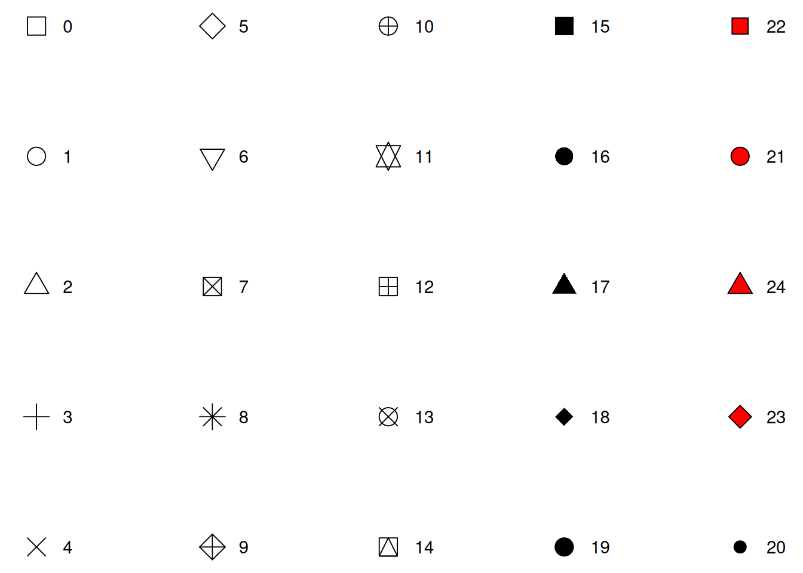
The name of the shape:
shape_names <- c(
"circle", paste("circle", c("open", "filled", "cross", "plus", "small")), "bullet",
"square", paste("square", c("open", "filled", "cross", "plus", "triangle")),
"diamond", paste("diamond", c("open", "filled", "plus")),
"triangle", paste("triangle", c("open", "filled", "square")),
paste("triangle down", c("open", "filled")),
"plus", "cross", "asterisk"
)
shapes <- data.frame(
shape_names = shape_names,
x = c(1:7, 1:6, 1:3, 5, 1:3, 6, 2:3, 1:3),
y = -rep(1:6, c(7, 6, 4, 4, 2, 3))
)
ggplot(shapes, aes(x, y)) +
geom_point(aes(shape = shape_names), fill = "red", size = 5) +
geom_text(aes(label = shape_names), nudge_y = -0.3, size = 3.5) +
scale_shape_identity() +
theme_void()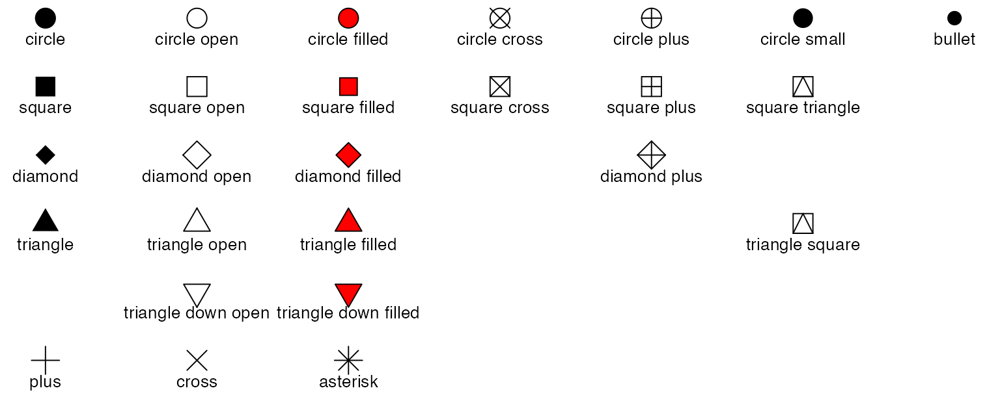
A single character, to use that character as a plotting symbol.
A . to draw the smallest rectangle that is visible, usualy 1 pixel.
An NA, to draw nothing.
Note that shapes 21-24 have both stroke colour and a fill. The size of the filled part is controlled by size, the size of the stroke is controlled by stroke. Each is measured in mm, and the total size of the point is the sum of the two. Note that the size is constant along the diagonal in the following figure.
sizes <- expand.grid(size = (0:3) * 2, stroke = (0:3) * 2)
ggplot(sizes, aes(size, stroke, size = size, stroke = stroke)) +
geom_abline(slope = -1, intercept = 6, colour = "white", size = 6) +
geom_point(shape = 21, fill = "red") +
scale_size_identity()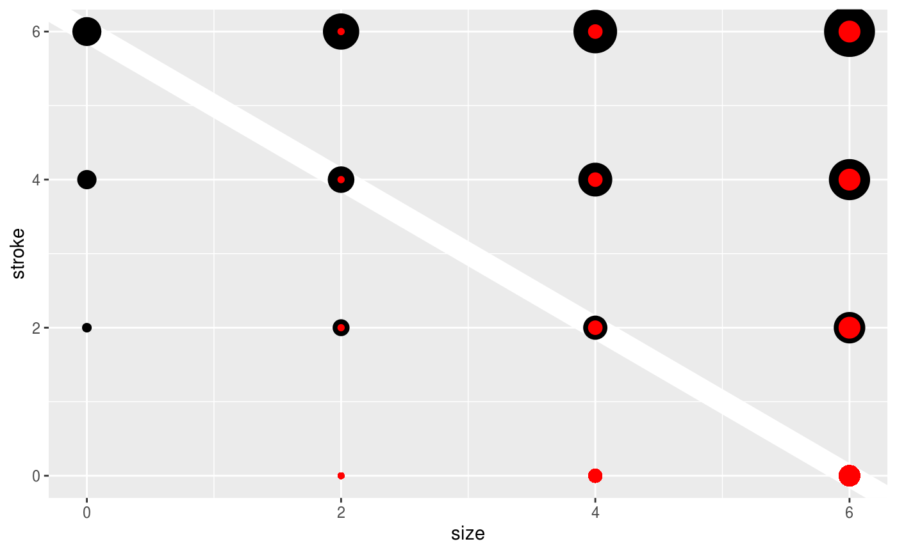
There are only three fonts that are guaranteed to work everywhere: “sans” (the default), “serif”, or “mono”:
df <- data.frame(x = 1, y = 3:1, family = c("sans", "serif", "mono"))
ggplot(df, aes(x, y)) +
geom_text(aes(label = family, family = family))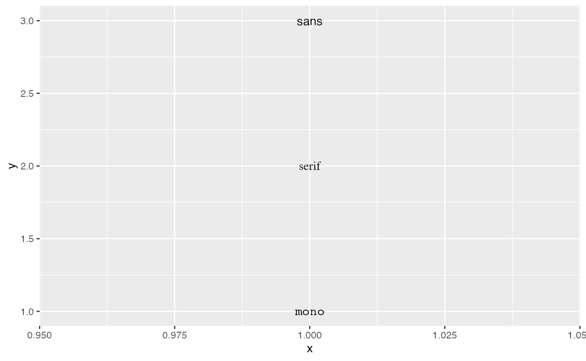
It’s trickier to include a system font on a plot because text drawing is done differently by each graphics device (GD). There are five GDs in common use (png(), pdf(), on screen devices for Windows, Mac and Linux), so to have a font work everywhere you need to configure five devices in five different ways. Two packages simplify the quandary a bit:
showtext makes GD-independent plots by rendering all text as polygons.
extrafont converts fonts to a standard format that all devices can use.
Both approaches have pros and cons, so you will to need to try both of them and see which works best for your needs.
df <- data.frame(x = 1:4, fontface = c("plain", "bold", "italic", "bold.italic"))
ggplot(df, aes(1, x)) +
geom_text(aes(label = fontface, fontface = fontface))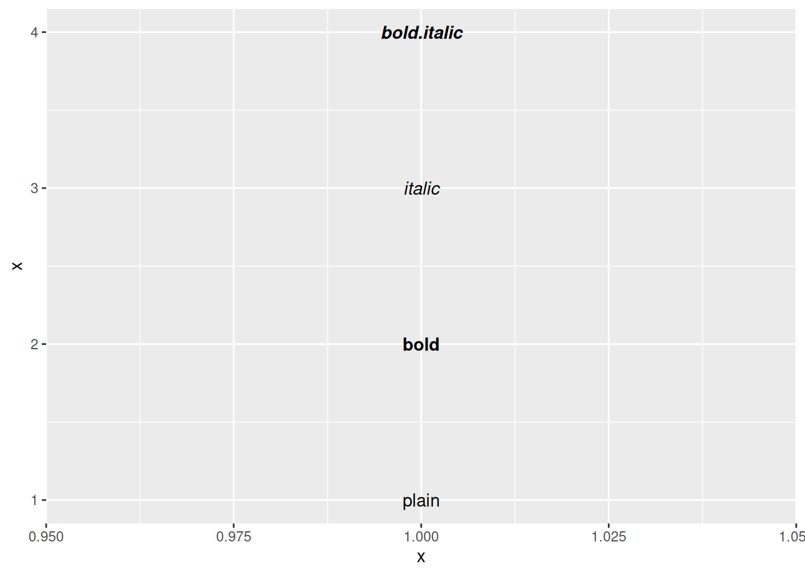
The size of text is measured in mm. This is unusual, but makes the size of text consistent with the size of lines and points. Typically you specify font size using points (or pt for short), where 1 pt = 0.35mm. ggplot2 provides this conversion factor in the variable .pt, so if you want to draw 12pt text, set size = 12 / .pt.
Horizontal and vertical justification have the same parameterisation, either a string (“top”, “middle”, “bottom”, “left”, “center”, “right”) or a number between 0 and 1:
just <- expand.grid(hjust = c(0, 0.5, 1), vjust = c(0, 0.5, 1))
just$label <- paste0(just$hjust, ", ", just$vjust)
ggplot(just, aes(hjust, vjust)) +
geom_point(colour = "grey70", size = 5) +
geom_text(aes(label = label, hjust = hjust, vjust = vjust))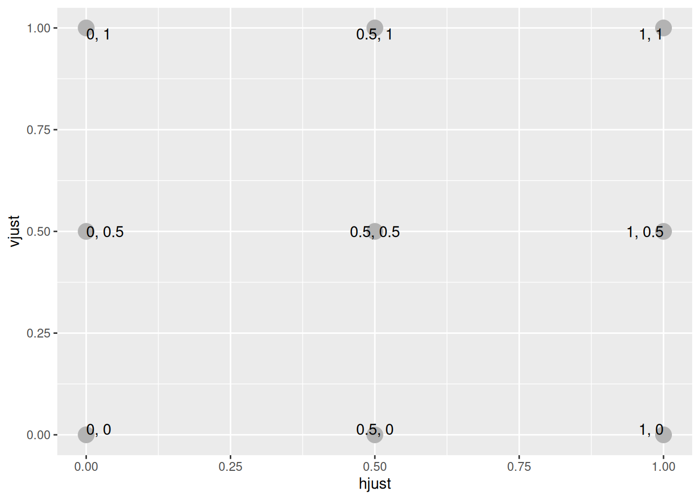
Note that you can use numbers outside the range (0, 1), but it’s not recommended.